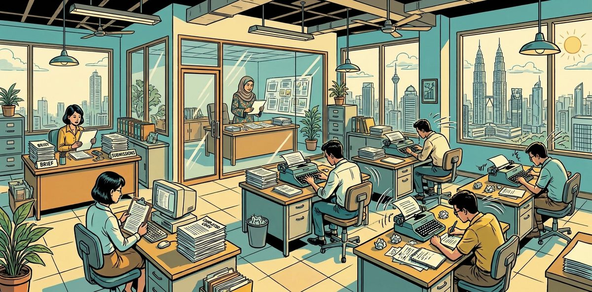

By Lee Yih Ven · Published 29 October 2026

Designed for Kiddoz Uniform House, a school uniform shop in Bangi, Selangor, where the owner, Puan Zarina Ahmad, writes every campaign with no marketing staff. One back-to-school promotion runs across WhatsApp, Instagram, email, a blog post and Google search, all in Bahasa Melayu. A wrong price, a date outside the promotion or a claim the shop cannot keep reaches every parent who reads it.
I built a prototype campaign team of AI agents: a coordinator starts one writer per channel at the same time, and an independent reviewer checks all the copy. Code checks every price, percentage, date and product against the shop's price list and every claim against its channel rules, and sends back only a channel that fails, at most twice. Every channel then goes to Puan Zarina for approval, and the system posts nothing.
Puan Zarina keeps every decision that matters: what to promote and where, the answer to any question about a price or date, and the approval of each channel. In testing, the team passed all 21 runs of its 16 scenarios, covering requested work, owner questions, parallel writing and corrections, linked steps and failures, and every run replays in the demo.
| Value proposition | Operational Efficiency |
|---|---|
| Problem type | Business workflow |
| Problem | The owner of a school uniform shop in Bangi writes every back-to-school campaign across WhatsApp, Instagram, email, a blog and Google search, with no marketing staff. A wrong price, a date outside the promotion or a claim the shop cannot keep reaches every parent who reads it. |
| Built | AI agents write and review the copy: a coordinator starts one writer for each channel asked for, all at the same time, and an independent reviewer checks every channel. Code checks the copy against the price list and channel rules and sends back only a failing channel; the owner approves every channel and the system posts nothing. |
| Evidence | All 21 test runs passed across requested work, owner questions, parallel work and corrections, linked steps and failures, and every logged step names the agent that took it and Puan Zarina as its owner. A pilot would still need a security review, a monitoring owner, a rollback plan and a link from the approved copy to the shop's own posting. |
Follow one campaign brief from Puan Zarina to copy ready for approval; an unavailable reviewer and a channel failing three times are in the test results.
Every RM figure, percentage and date in the copy must match the price list. Each product is named in words, by garment, colour, sleeve, boys or girls and school level, never by a stock code. A brief with a wrong price, an unlisted product, other dates or a claim the shop cannot keep becomes one question to Puan Zarina before any copy is written.
The coordinator starts one writer for each channel asked for, all together, and each writer knows only the checked facts and its own channel's rules. In the recorded runs, writing took a median of 40.8 seconds with five writers working at the same time, against 120.7 seconds one after another (2.96 times faster), and the whole campaign took 17.9% less time (166.8 against 203.2 seconds).
The reviewer reads every channel against the facts and Puan Zarina's own instructions. A channel reaches ready for approval only after that review, and code marks it failed when no review could run. Only Puan Zarina approves, on the page.
Puan Zarina asks for a WhatsApp message with the boys' white primary school shirt at RM18, but the price list says RM20.00, so code holds the work and Puan Zarina gets one question. The answer is to use RM20.00, and the copy is written and checked. The reviewer sends it back once for a correction, and it then passes review and waits for Puan Zarina's approval.
Each run was scored from the tool log and the records the team wrote, against an answer key fixed before the first run, with ten fixed rules checked on every run. All 21 runs of the 16 scenarios passed across five test categories; one campaign ran six times to time writing in parallel against one channel after another.
| Test category | What it checks | Passed | One example |
|---|---|---|---|
| A. Requested work | The team writes exactly the channels asked for, from checked facts, in the tone asked for. | 8 of 8 | Asked for WhatsApp and Instagram only, with more urgency, the team starts two writers, and the urgency comes from the 30 October deadline with no stock claim. |
| B. Facts and owner questions | A price, product, date or claim the price list or channel guide does not support goes to the owner as one question, and no copy is written. | 4 of 4 | Asked to say the shop is the cheapest in Bangi, with a free gift and free delivery, the team writes nothing and asks whether to go ahead with the listed offer. |
| C. Parallel work and corrections | Writers work at the same time; a copy that fails a check or the review goes back alone, at most twice. | 4 of 4 | The Instagram copy is made to quote RM18.00 as a test. The copy check catches it, Instagram alone is rewritten, and the WhatsApp copy is kept. |
| D. Linked steps | A follow-up message carries the earlier facts and copy forward and changes only what was asked. | 3 of 3 | After all five channels are written, asked to redo the email only in Santai tone, the team starts one writer for the email and keeps the other four channels as they were. |
| F. Failures | Something behind the scenes breaks, and the team stops cleanly without inventing a price or passing unreviewed copy. | 2 of 2 | The price list cannot be loaded, so no copy is written and the WhatsApp channel is marked failed. |
A further 99 tests, which need no API key, cover the rules no paid run has to repeat, such as a price list with a missing promotion price, a discount over 20% and the limit on model calls per run. All 99 pass: 61 tool tests and 38 copy-check tests. Every run, step by step, is in the Technical Implementation tab.
These tests show the team follows its fact, review and approval rules on every run. How parents respond to the copy and the hours saved for the owner are what a pilot in a working shop would measure.
| Page | What you can do |
|---|---|
| Watch the demo | Pick any of the 21 recorded runs across the 16 campaigns and replay it: the facts, the writers' start and finish times, every check, the reviewer's findings and each retry. Read each channel's copy in full, and approve, reject or remark on it as the owner would, or answer the team's question when the work waits for the owner. No key is needed. |
| Answer Key | The expected result of all 16 scenarios and the ten hard limits, fixed before the first run. |
A campaign team designed so the owner writes one brief and approves checked copy for every channel. If that fits your shop or team, or you are evaluating the work, watch the demo or message me.
| Layer | Components |
|---|---|
| Agents | Claude Haiku 5.5 for all seven agents · Claude Agent SDK 0.3.312 (TypeScript, Node 22) · one coordinator query() agent · six AgentDefinitions: five writers and an independent reviewer |
| Hooks | PreToolUse on the coordinator: facts first, the Task gate, the coverage check · PreToolUse inside subagents: one tool each, one output · PostToolUse on each writer tool: checkCopy · PostToolUse on each Task call: the runner's record |
| MCP server | In process (createSdkMcpServer, tool()), one per run, bound to that run's state · three resources · nine tools |
| Data and pages | JSON resources (the price list built by Python 3) · every run recorded in full as JSON · demo.html replays them · GitHub Pages |
extract_facts, starts the writers for the requested channels together, sends the copy to the reviewer, redoes only a failing channel, asks the owner when a fact is missing or wrong, and delivers. Its prompt states goals and a quality bar, not a procedure.run.mjs) owns the caps (5 writers, 3 attempts per channel, 60 model calls, 4 reviews), both hooks and the record of every run. Each Task call runs in the foreground, so the coordinator waits for the results.Seven agents, one card each in config/agent_cards.json, all on Claude Haiku 5.5. Classification: adviser, business data; supervision: human in the loop.
| Agent | Card ID | Job | Tools |
|---|---|---|---|
coordinator | kiddoz-coordinator | Reads the owner's request, runs extract_facts, starts the writers together, sends the copy to the reviewer, redoes only a failing channel, asks the owner, delivers. | Task, extract_facts, ask_owner, deliver |
whatsapp_writer | kiddoz-whatsapp-writer | Writes the WhatsApp broadcast for a Kiddoz campaign from the checked facts it is given. Start one per requested WhatsApp broadcast. | write_whatsapp |
instagram_writer | kiddoz-instagram-writer | Writes the Instagram caption for a Kiddoz campaign from the checked facts it is given. Start one per requested Instagram caption. | write_instagram |
email_writer | kiddoz-email-writer | Writes the three-email sequence for a Kiddoz campaign from the checked facts it is given. Start one per requested three-email sequence. | write_email |
blog_writer | kiddoz-blog-writer | Writes the blog post for a Kiddoz campaign from the checked facts it is given. Start one per requested blog post. | write_blog |
seo_writer | kiddoz-seo-writer | Writes the Google search paragraph and meta description for a Kiddoz campaign from the checked facts it is given. Start one per requested Google search paragraph and meta description. | write_seo |
reviewer | kiddoz-reviewer | Independent reviewer: checks every channel's copy against the facts and the owner's requirements, then compares all channels for the same offer, prices and dates. It did not write the copy. | report_findings |
| Resource (read) | Holds |
|---|---|
kiddoz://store-profile | S1 to S6: the shop, Bangi, the owner, the range, how parents buy (the shop or WhatsApp, no delivery) and the customers. |
kiddoz://price-list | 100 campaign SKUs in 8 categories with normal price, promotion price and discount (10, 15, 20%, at most 20%), the period PL-PERIOD (Monday 26 October 2026 to Friday 30 October 2026) and the clauses PL-01 to PL-04. |
kiddoz://channel-guide | G1 to G7: the five channel formats, the three tones (Santai, Formal, Campur; house tone Santai) and the banned claims. |
| Tool (act) | Used by | Checked in code |
|---|---|---|
extract_facts | Coordinator, first | The coordinator's reading checked against the owner's own message and the price list: every SKU, price, discount, date and claim. Returns facts with an ID and a source each, and any owner issue (O1 to O4). |
ask_owner | Coordinator | One of the five reason codes, the item, one sentence ending in a question mark and the waiting channels; O1 to O4 only when an issue was raised, O5 only at the cap. |
deliver | Coordinator | Every requested channel with the status its run record supports: ready_for_approval, waiting_for_owner or failed. Approved is refused. |
write_whatsapp | whatsapp_writer | The broadcast and its claims list; checked by checkCopy (G1: 4 to 6 lines, the last a call to action). |
write_instagram | instagram_writer | Caption, hashtags and claims; checked by checkCopy (G2: 3 to 5 paragraphs, 5 to 8 hashtags in the right format and none inside the caption). |
write_email | email_writer | Teaser, Tawaran and Last Call with claims; checked by checkCopy (G3: each with a subject and [Nama]). |
write_blog | blog_writer | Title, body and claims; checked by checkCopy (G4: 300 to 500 words). |
write_seo | seo_writer | Paragraph, meta description and claims; checked by checkCopy (G5: 150 to 200 words, at most 160 characters). |
report_findings | reviewer | A verdict for every channel given; a fail names the fact, requirement or clause and what is wrong. |
A question to the owner carries one fixed reason, never a confidence score. The channel statuses are written, checked, reviewed, ready_for_approval, waiting_for_owner, failed, approved; only the owner sets approved.
| Code | When |
|---|---|
| O1 | A fact the copy needs is missing from the brief |
| O2 | A product is not on the price list: not in this campaign |
| O3 | The brief asks for a claim the channel guide does not allow |
| O4 | The brief contradicts itself or the price list |
| O5 | A channel still fails after the first attempt and two corrections |
extract_facts; every other coordinator tool is refused until the facts are checked.checkCopy stores the copy as checked or keeps the exact errors, and the runner hands that record to the coordinator.deliver records each channel with the status its run record supports.| Business problem | Design choice | Where in the code |
|---|---|---|
| A wrong price in a post costs the shop money or trust. | Every RM figure, percentage and date in the copy text is checked against the price list the moment a writer returns it. A copy that fails goes back with the exact error. | hooks/post_tool_use.mjs checkCopy; lib/scan.mjs |
| A brief can carry a typo, an old price or a product outside the promotion. | extract_facts checks the coordinator's reading against the owner's own message, passed in by the runner, and against the price list. A conflict becomes one owner question on a fixed reason (O1 to O4), and no writer starts. | lib/facts.mjs extractFacts; mcp_server.mjs; run.mjs PreToolUse |
| Copy written before the facts are checked is written from memory. | The runner refuses every coordinator tool until extract_facts has run on the new message. | run.mjs PreToolUse, coordinator |
| Parents look for the item, not a code. | The copy check refuses a SKU code in the copy, and copy that does not name each featured product by garment, colour, sleeve, boys or girls and school level. | lib/naming.mjs namedInCopy; checkCopy |
| A promise the shop cannot keep (cheapest, free delivery, stock running out) misleads parents. | The banned claims (G7) and the price-list clauses (PL-01 to PL-04) are scanned in the copy text itself, whatever the claims list says. An accurate negation such as "tanpa logo" is allowed. | lib/scan.mjs BANNED, bannedIn |
| Rewriting channels that already passed wastes time and can break them. | The runner refuses a writer for a channel that was not requested, or that already passed in the same step, and allows at most five writers and two corrections. A channel still failing after that goes to the owner as O5. | run.mjs PreToolUse; lib/tools.mjs askOwner |
| A review that misses a channel lets unchecked copy through. | The reviewer starts only when every requested channel has checked copy (the coverage check). Its task carries the facts, the owner's requirements and every channel's current copy in full. | lib/tools.mjs coverage, reviewSet; run.mjs reviewerBlock |
| Writers that talk to each other spread one error to every channel. | Hub and spoke: each subagent gets context only from its task, has one output tool, and never talks to another subagent. Its reply returns to the coordinator with the runner's record of what it did. | agents.mjs AGENTS; run.mjs PostToolUse on Task |
| Copy marked ready without a review would reach parents unchecked. | deliver accepts only the status the run record supports: ready for approval only when the current version passed review. No function sets approved. | lib/tools.mjs truthfulStatus, deliver |
| The owner must know which agent did what, and who answers for it. | Every tool-log line carries the acting agent's card: agent ID, version, named owner, classification and supervision mode. | config/agent_cards.json; run.mjs logLine |
| A price list that fails to load must never be filled in from memory. | A resource that fails its own check (a missing promotion price, or a discount over 20% or one that does not recalculate) is refused, never repaired. The run stops and the channels are delivered as failed. | lib/resources.mjs checkPriceList; run.mjs PreToolUse |
| The owner needs proof the team follows the rules before relying on it. | The Answer Key was fixed before the first run, and each run is scored from the tool log and the run state, with ten hard limits. | benchmark/score.mjs |
Scored from the tool log and the run state on every benchmark run, in benchmark/score.mjs.
The team writes copy and posts nothing; approval on the demo page is kept in the page only. Copy carries [No. WhatsApp] where the owner adds the number when posting, so no number is ever invented. The resources hold business data only, with no customer records.
The SDK's query() has no forced tool choice, so the runner refuses every coordinator tool until extract_facts has run on the new owner message. No writer starts while the facts hold an owner question.
// run.mjs: PreToolUse, the coordinator
// ---- the coordinator
if (state.modelCalls >= state.caps.modelCalls) { abort.abort(); return deny("coordinator", name, "model-call cap reached: the run stops"); }
const sn = short(name);
if (sn === "extract_facts") { state.factsCalled = true; logLine("coordinator", "call", name, tin); return {}; }
if (!state.factsCalled) return deny("coordinator", name, "extract_facts runs first, on the owner's message");
if (state.facts && state.facts.status === "resource_error" && sn !== "deliver") return deny("coordinator", name, "a resource could not be loaded: stop and deliver the channels as failed");
if (sn === "ask_owner" || sn === "deliver") { logLine("coordinator", "call", name, tin); return {}; }The coordinator gives its reading of the brief; the owner's message comes from the runner, never from the model. Code compares every price and percentage the owner wrote with the price list.
// mcp_server.mjs: extract_facts
}, async (reading) => {
const r = extractFacts(reading, ctx.ownerMessage, { overrides: ctx.overrides, carried: ctx.carried });
ctx.onFacts(r);
if (r.status === "resource_error") return { ...reply(r), isError: true };
return reply(r);
}),// lib/facts.mjs: prices and discounts against the list
// Prices and discounts the owner wrote must match the list (O4); a stated discount is recalculated.
for (const a of amountsIn(msg)) {
const sku = ownerOf(a.at, mentions, known);
if (!sku || !bySku[sku]) continue;
const it = bySku[sku];
if (round2(a.value) !== it.normal_price && round2(a.value) !== it.promo_price) {
issues.push({ code: "O4", item: sku, detail: `${a.raw} in the brief does not match ${sku}: normal ${rm(it.normal_price)}, promotion ${rm(it.promo_price)}.`,
question_hint: `${sku} is listed at ${rm(it.promo_price)} for the campaign (normal ${rm(it.normal_price)}), but your brief says ${rm(a.value)}; should I use the listed ${rm(it.promo_price)}?` });
}
}
for (const p of percentsIn(msg)) {
const sku = ownerOf(p.at, mentions, known);
if (!sku || !bySku[sku]) continue;
const it = bySku[sku];
if (p.value !== it.discount_pct) {
issues.push({ code: "O4", item: sku, detail: `${p.raw} in the brief: ${sku} is ${rm(it.normal_price)} to ${rm(it.promo_price)}, which is ${it.discount_pct}%.`,
question_hint: `${sku} goes from ${rm(it.normal_price)} to ${rm(it.promo_price)}, which is ${it.discount_pct}% off, not ${p.raw}; should I use ${it.discount_pct}%?` });
}
}Every writer start passes through the runner: only a requested channel, never one that already passed in the same step, at most two corrections and five writers. The runner adds the checked facts, the channel rule and, on a correction, the exact open errors to the writer's task, and runs it in the foreground.
// run.mjs: PreToolUse, a writer's Task call
if (TASK.test(name)) {
const st = tin.subagent_type;
if (CHANNEL_OF[st]) {
const channel = CHANNEL_OF[st]; const ch = state.channels[channel];
if (!state.facts) return deny("coordinator", name, "no facts yet");
if (state.facts.status === "needs_owner") return deny("coordinator", name, `the facts have open owner questions (${state.facts.owner_issues.map((i) => `${i.code} ${i.item}`).join("; ")}): ask the owner with ask_owner; no copy is written on them`);
if (!state.facts.channels.includes(channel)) return deny("coordinator", name, `${channel} was not requested in this message`);
if (["waiting_for_owner", "failed"].includes(ch.status)) return deny("coordinator", name, `${channel} is ${ch.status}`);
if (ch.attempts > 0 && ["checked", "reviewed"].includes(ch.status)) return deny("coordinator", name, `${channel} passed; redo only failing channels`);
if (ch.attempts >= state.caps.attempts) return deny("coordinator", name, `${channel} has had the first attempt and two corrections: ask the owner with O5`);
if (ch.attempts === 0 && requested(state).filter((c) => state.channels[c].attempts > 0).length >= state.caps.writers) return deny("coordinator", name, "at most five writers per run");
ch.attempts += 1; ch.requested = true; ch.status = "writing";
S.writers += 1;
const startedPrompt = String(tin.prompt || "");
const added = writerBlock(state, channel);
if (mode === "sequential") { const prev = seqChain; let release; seqChain = new Promise((r) => (release = r)); S.spans[input.tool_use_id] = { release }; await prev; }
S.spans[input.tool_use_id] = { ...(S.spans[input.tool_use_id] || {}), agent: st, channel, attempt: ch.attempts, start: at(), version0: ch.version };
logLine("coordinator", "start", name, { subagent: st, attempt: ch.attempts, coordinator_prompt: startedPrompt });
return allowWith({ ...tin, run_in_background: false, prompt: startedPrompt + added });
}// run.mjs: writerBlock
function writerBlock(state, channel) {
const ch = state.channels[channel];
const fb = factsBlock(state);
const fix = ch.attempts > 1 || ch.carried ? {
correction: ch.attempts > 1 || ch.findings.length || ch.errors.length,
open_errors: ch.errors.map((e) => `${e.clause}: ${e.detail}`),
open_findings: ch.findings.map((x) => `${x.fact_or_clause}: ${x.problem}`),
} : null;
return `\n\n--- Runner record (checked facts for this task) ---\n${JSON.stringify({ channel, ...fb, channel_rules: fb.channel_rules.filter((r) => r.id === { whatsapp: "G1", instagram: "G2", email: "G3", blog: "G4", seo: "G5" }[channel] || r.id === "G6" || r.id === "G7"), ...(fix && fix.correction ? { fix } : {}) }, null, 1)}`;
}Each subagent has a description the coordinator picks it by, its own system prompt and one tool. A writer knows only its definition and its task message; a retry is a fresh instance.
// agents.mjs: the writers and the reviewer
const writer = (channel, tool, label) => ({
description: `Writes the ${label} for a Kiddoz campaign from the checked facts it is given. Start one per requested ${label}.`,
prompt: `${WRITER_RULES}\n\nYour channel: ${CH_RULE[channel]}`,
tools: [mcp(tool)],
model: MODEL,
});
export const AGENTS = {
whatsapp_writer: writer("whatsapp", "write_whatsapp", "WhatsApp broadcast"),
instagram_writer: writer("instagram", "write_instagram", "Instagram caption"),
email_writer: writer("email", "write_email", "three-email sequence"),
blog_writer: writer("blog", "write_blog", "blog post"),
seo_writer: writer("seo", "write_seo", "Google search paragraph and meta description"),
reviewer: {
description: "Independent reviewer: checks every channel's copy against the facts and the owner's requirements, then compares all channels for the same offer, prices and dates. It did not write the copy.",The PostToolUse hook checks the copy text itself, not only the writer's claims list. A SKU code in the copy and a product not named in words are refused, and every RM figure, percentage and date must match the facts.
// hooks/post_tool_use.mjs: checkCopy
/** Checks one writer's output against the facts from extract_facts. Returns { ok, errors }. */
export function checkCopy(channel, input, factsResult) {
const errors = [];
const facts = factsResult?.facts || [];
const ids = new Set(facts.map((f) => f.id));
const products = facts.filter((f) => f.field === "product");
const period = facts.find((f) => f.id === "F-PERIOD");
const text = copyText(channel, input);
// Claims list: every claim cites a real fact ID; every featured product is cited by its SKU.
const claims = Array.isArray(input?.claims) ? input.claims : [];
if (!claims.length) errors.push({ check: "claims", clause: "claims", detail: "The claims list is empty; each claim must cite a fact ID." });
for (const cl of claims) {
if (!ids.has(cl.fact_id)) errors.push({ check: "claims", clause: "facts", detail: `Claim "${String(cl.text || "").slice(0, 60)}" cites ${cl.fact_id || "no fact ID"}, which is not in the facts.` });
else if (cl.sku && String(cl.fact_id).startsWith("P-") && cl.fact_id !== `P-${cl.sku}`) errors.push({ check: "claims", clause: "facts", detail: `Claim cites ${cl.fact_id} but names SKU ${cl.sku}.` });
}
for (const p of products) if (!claims.some((cl) => cl.fact_id === p.id)) errors.push({ check: "claims", clause: p.id, detail: `${p.sku} is a featured product but no claim cites ${p.id}.` });
// Parents look for the item, not its code: a SKU belongs in the claims list, never in the copy text.
for (const s of new Set(skusIn(text).map((m) => m.sku))) {
if (!products.some((p) => p.sku === s)) errors.push({ check: "figures", clause: "price-list", detail: `${s} appears in the copy but is not a featured product in the facts.` });
else errors.push({ check: "sku_in_copy", clause: "claims", detail: `The SKU code ${s} is written in the copy; name the item in words for parents and cite ${s} in the claims list only.` });
}
// Every featured product is named in words a parent would look for (garment, colour, sleeve, boys or girls,
// school level or unit), together in one line or about two sentences.
for (const p of products) if (!namedInCopy(text, p.sku, p.name)) errors.push({ check: "product_name", clause: p.id, detail: `${p.sku} is not named in words in the copy; name it as "${p.name_bm}" (the fabric may be added).` });
// Every RM figure must be a featured product's normal price, promotion price or saving.
const allowed = new Set(products.flatMap((p) => [num(p.normal_price), num(p.promo_price), num(p.saving)]));
for (const a of amountsIn(text)) if (!allowed.has(Math.round(a.value * 100) / 100)) {
errors.push({ check: "figures", clause: "price-list", detail: `${a.raw} in the copy matches no featured price; the listed figures are ${products.map((p) => `${p.sku} ${p.normal_price} to ${p.promo_price}`).join(", ")}.` });
}
// Every percentage must be a featured product's recalculated discount, at most 20%.
const discs = new Set(products.map((p) => p.discount_pct));
for (const p of percentsIn(text)) {
if (p.value > 20) errors.push({ check: "figures", clause: "G7", detail: `${p.raw} is over the 20% maximum discount.` });
else if (!discs.has(p.value)) errors.push({ check: "figures", clause: "price-list", detail: `${p.raw} is not the discount of any featured product (${products.map((x) => `${x.sku} ${x.discount_pct}%`).join(", ")}).` });
}
// Promotion prices are quoted only for the campaign period.
if (period) for (const d of datesIn(text)) if (!dateInPeriod(d, period)) errors.push({ check: "dates", clause: "PL-PERIOD", detail: `"${d.raw}" is outside the campaign period, ${period.value}.` });
// Banned phrases in the copy text, whether or not the claims list names them.
for (const b of bannedIn(text)) errors.push({ check: "banned", clause: b.clause, detail: `"${b.phrase}" is a ${b.kind.replace("_", " ")} claim, not allowed (${b.clause}).` });
errors.push(...formatErrors(channel, input || {}));
return { ok: errors.length === 0, errors };
}A hook speaks to the agent that made the call, so the writer's check result would never reach the coordinator on its own. After each Task call returns, the runner hands the coordinator that channel's status and exact errors.
// run.mjs: PostToolUse, the coordinator's Task call
if (!input.agent_id && TASK.test(name)) {
const sp = S.spans[input.tool_use_id] || {};
sp.end = at();
if (sp.release) sp.release();
if (sp.channel) {
const ch = state.channels[sp.channel];
if (ch.version === sp.version0) { ch.status = "written"; ch.errors = [{ clause: "coverage", detail: "the writer returned without calling its output tool; a prose reply is not an output" }]; }
const rec2 = channelRecord(state, sp.channel);
S.timeline.push({ agent: sp.agent, channel: sp.channel, attempt: sp.attempt, start: sp.start, end: sp.end, status: rec2.status });
logLine("coordinator", "returned", name, rec2);
return { hookSpecificOutput: { hookEventName: "PostToolUse", additionalContext: `RUNNER RECORD ${JSON.stringify(rec2)}` } };
}
if (sp.agent === "reviewer") {
const done = state.reviews.length > sp.reviews0;
const rr = done ? { review: "complete", verdicts: state.reviews.at(-1).verdicts } : { review: "incomplete", note: "the reviewer returned without report_findings; nothing is reviewed" };
S.timeline.push({ agent: "reviewer", start: sp.start, end: sp.end, status: rr.review });
logLine("coordinator", "returned", name, rr);
return { hookSpecificOutput: { hookEventName: "PostToolUse", additionalContext: `RUNNER RECORD ${JSON.stringify(rr)}` } };
}
}The reviewer starts only when every requested channel has checked copy with no open findings. Its task carries the facts, the owner's requirements and every channel's current copy.
// run.mjs: PreToolUse, the reviewer's Task call
if (st === "reviewer") {
if (cond && cond.kind === "reviewer_down") { S.reviewFaults += 1; return deny("coordinator", name, "the reviewer could not be reached (service error 503)"); }
const cov = coverage(state);
if (!cov.ok) return deny("coordinator", name, `coverage check: ${cov.missing.map((m) => `${m.channel}, ${m.why}`).join("; ")}`);
if (state.reviews.length >= state.caps.reviews) return deny("coordinator", name, "review cap reached");
const given = reviewSet(state);
state.reviewing = given;
S.spans[input.tool_use_id] = { agent: "reviewer", start: at(), reviews0: state.reviews.length, given };
logLine("coordinator", "start", name, { subagent: "reviewer", given, versions: Object.fromEntries(given.map((c) => [c, state.channels[c].version])), coordinator_prompt: String(tin.prompt || "") });
return allowWith({ ...tin, run_in_background: false, prompt: String(tin.prompt || "") + reviewerBlock(state, given) });
}// lib/tools.mjs: coverage
/** Coverage check before the reviewer: every requested channel that is not held or failed has checked copy. */
export function coverage(s) {
const missing = [];
for (const c of requested(s)) {
const ch = s.channels[c];
if (["waiting_for_owner", "failed"].includes(ch.status)) continue;
if (ch.status === "writing") missing.push({ channel: c, why: "its writer is still working; wait for it to return" });
else if (!ch.copy) missing.push({ channel: c, why: "no output: the writer did not call its tool" });
else if (ch.status === "written" && ch.findings.length) missing.push({ channel: c, why: `the reviewer's findings are open; redo this channel first: ${ch.findings.map((f) => `${f.fact_or_clause}: ${f.problem}`).join(" | ")}` });
else if (ch.status === "written") missing.push({ channel: c, why: `the copy has open check errors: ${ch.errors.map((e) => e.detail).join(" | ")}` });
}
return { ok: missing.length === 0, missing };
}A question to the owner carries one of five reason codes, and O1 to O4 must match an issue code raised. O5 needs a channel that still fails after two corrections; questions are never raised on confidence.
// lib/tools.mjs: askOwner
/** ask_owner: on the fixed reasons only. O1 to O4 must match an issue extract_facts raised; O5 a channel at its cap. */
export function askOwner(s, { code, item, question, channels } = {}) {
const errs = [];
if (!OWNER_CODES[code]) errs.push(`reason code must be one of ${Object.keys(OWNER_CODES).join(", ")}`);
if (!String(item || "").trim()) errs.push("item is required");
if (!String(question || "").trim()) errs.push("question is required");
else if (sentences(question) !== 1 || !/\?\s*$/.test(question)) errs.push("the question must be one sentence ending with a question mark");
const chs = Array.isArray(channels) ? channels.map((c) => String(c).toLowerCase()) : [];
if (!chs.length) errs.push("name the waiting channels");
const unknown = chs.filter((c) => !CHANNELS.includes(c));
if (unknown.length) errs.push(`unknown channel(s): ${unknown.join(", ")}`);
if (OWNER_CODES[code] && code !== "O5") {
const open = (s.facts?.owner_issues || []).filter((i) => i.code === code);
if (!open.length) errs.push(`extract_facts raised no ${code} issue; escalation is on the fixed reasons only`);
}
if (code === "O5") {
const atCap = chs.filter((c) => s.channels[c]?.attempts >= s.caps.attempts && s.channels[c]?.status !== "reviewed" && s.channels[c]?.status !== "checked");
if (!atCap.length) errs.push("O5 needs a channel that still fails after the first attempt and two corrections");
}
if (errs.length) return { ok: false, error: errs.join("; ") };
const status = code === "O5" ? "failed" : "waiting_for_owner";
for (const c of chs) { const ch = s.channels[c]; ch.requested = ch.requested || !!s.facts?.channels?.includes(c); ch.status = status; ch.history.push({ status, code }); }
const rec = { code, reason: OWNER_CODES[code], item: String(item), question: String(question).trim(), channels: chs, status };
s.ownerQuestions.push(rec);
return { ok: true, recorded: rec };
}A channel is ready for approval only when its current version passed review. No function sets approved; only the owner does, on the page.
// lib/tools.mjs: truthfulStatus, deliver
/** The status each channel can truthfully end with, from the run state alone. */
export function truthfulStatus(s, c) {
const ch = s.channels[c];
if (ch.status === "waiting_for_owner") return "waiting_for_owner";
if (["reviewed", "ready_for_approval"].includes(ch.status) && ch.reviewedVersion === ch.version) return "ready_for_approval";
return "failed";
}
/** deliver: every requested channel with its status; a status the state does not support is refused. */
export function deliver(s, { channels = [], summary = "" } = {}) {
const errs = [];
const got = Object.fromEntries(channels.map((v) => [String(v.channel).toLowerCase(), v]));
const need = requested(s).length ? requested(s) : (s.facts?.channels || []);
for (const c of need) if (!got[c]) errs.push(`${c} was requested and is missing from the delivery`);
for (const [c, v] of Object.entries(got)) {
if (!CHANNELS.includes(c)) { errs.push(`unknown channel ${c}`); continue; }
if (v.status === "approved") { errs.push(`${c}: only the owner sets approved`); continue; }
if (!["ready_for_approval", "waiting_for_owner", "failed"].includes(v.status)) { errs.push(`${c}: status must be ready_for_approval, waiting_for_owner or failed`); continue; }
const truth = truthfulStatus(s, c);
if (v.status !== truth) errs.push(`${c} cannot be ${v.status}; the run record supports ${truth}`);
}
if (errs.length) return { ok: false, error: errs.join("; ") };
const rec = { channels: Object.fromEntries(Object.entries(got).map(([c, v]) => [c, { status: v.status, note: v.note || "" }])), summary: String(summary) };
for (const [c, v] of Object.entries(rec.channels)) { s.channels[c].status = v.status; s.channels[c].history.push({ status: v.status, delivered: true }); }
s.deliveries.push(rec);
return { ok: true, delivered: rec };
}Every line of the tool log names the acting agent and carries its card from config/agent_cards.json: ID, version, owner, classification and supervision mode.
// run.mjs: card and logLine
const card = (agent) => ({ agent, ...(CARDS[agent] || CARDS.coordinator) });
const logLine = (agent, event, tool, detail) => S.toolLog.push({ t: at(), ...card(agent), event, tool: short(tool), ...(detail ? { detail } : {}) });The coordinator has the Task tool and the MCP tools, no settings from disk, and both hooks. The subagents come from the six AgentDefinitions.
// run.mjs: query() options
for await (const m of query({ prompt, options: {
model: MODEL, systemPrompt: COORDINATOR_PROMPT, settingSources: [], tools: ["Task"], cwd: ROOT, persistSession: false,
allowedTools: ["Task", ...["extract_facts", "ask_owner", "deliver", "write_whatsapp", "write_instagram", "write_email", "write_blog", "write_seo", "report_findings"].map(mcp)],
permissionMode: "dontAsk", mcpServers: { kiddoz: server }, agents: AGENTS, maxTurns: 40, abortController: abort,
hooks: { PreToolUse: [{ hooks: [pre], timeout: 900 }], PostToolUse: [{ hooks: [post], timeout: 120 }] },Every run is scored from the tool log and the run state, whatever the replies say. The ten hard limits hold on every run.
// benchmark/score.mjs: the ten hard limits
// ---- the ten hard limits
const ran = coord.filter((l) => ["call", "start"].includes(l.event));
if (ran.length && ran[0].tool !== "extract_facts") fails.hard.push(`1: first tool was ${ran[0].tool}`);
if (fails.facts.some((f) => /matches no featured price|not the discount|outside the campaign|not a featured product/.test(f))) fails.hard.push("2: a figure in the copy does not match the price list");
if (S.facts?.owner_issues?.length && writerStarts.length) fails.hard.push("3: copy written on an open owner question");
if (S.facts?.owner_issues?.length && !asks.length && S.facts.status !== "resource_error") fails.hard.push("3: an owner issue was not asked");
for (const [c, v] of Object.entries(S.channels || {})) if (v.text && bannedIn(v.text).length && ["ready_for_approval", "reviewed"].includes(v.status)) fails.hard.push(`4: banned claim in ${c}`);
if (firstStarted.length > 5) fails.hard.push("5: more than five writers");
if (mode !== "sequential" && writerStarts.filter((l) => l.detail.attempt === 1).length > 1) {
const ids = writerStarts.filter((l) => l.detail.attempt === 1).map((l) => S.events.find((e) => e.kind === "tool_use" && e.agent === "coordinator" && e.input?.subagent_type === l.detail.subagent)?.msg);
if (new Set(ids).size > 1) fails.hard.push("5: first writers not started in one coordinator response");
}
for (const r of reviews) { const req = Object.entries(S.channels).filter(([, v]) => v.requested && !["waiting_for_owner", "failed"].includes(v.status)).map(([c]) => c); for (const c of req) if (!(r.detail.given || []).includes(c)) fails.hard.push(`6: review without ${c}`); }
if (delivered.length) { const req = Object.entries(S.channels).filter(([, v]) => v.requested).map(([c]) => c); for (const c of req) if (!delivered.at(-1).channels[c]) fails.hard.push(`6: ${c} missing at delivery`); }
if (log.some((l) => l.event === "refused" && /only .* uses|not a tool of this agent/.test(l.detail || ""))) fails.hard.push("7: a writer called another tool");
for (const s of writerStarts.filter((l) => l.detail.attempt > 1)) { const c = CH[s.detail.subagent]; const prev = (S.channels[c]?.history || []); if (!prev.some((h) => h.status === "check_failed" || h.status === "review_failed") && !log.some((l) => l.event === "returned" && l.detail?.channel === c && ["check_failed", "no_output"].includes(l.detail?.status))) fails.hard.push(`8: ${c} redone without a failure`); }
if (Object.values(final).includes("approved")) fails.hard.push("9: a channel was approved by an agent");
if (Object.values(S.channels || {}).some((v) => v.attempts > 3)) fails.hard.push("9: more than two corrections");
if (log.some((l) => !l.agent_id || !l.owner || !l.version || !l.classification || !l.supervision)) fails.hard.push("10: a tool-log line without its agent card");| Category | Scenarios | Runs passed |
|---|---|---|
| A. Requested work | A1, A2, A6 | 8 of 8 |
| B. Facts and owner questions | B2, B5, B7, B8 | 4 of 4 |
| C. Parallel work and corrections | C2, C3, C4, C6 | 4 of 4 |
| D. Linked steps | D1, D3, D4 | 3 of 3 |
| F. Failures | F1, F7 | 2 of 2 |
benchmark/scenarios.json). Test calendar (the date the campaign is set on): Wednesday 28 October 2026, 10:00 Malaysia time.checkCopy again by the scorer.benchmark/merge_results.mjs).deliver, the model-call cap (F8) and the five format rules.| A1 run | Mode | Writing phase | Writers' time added up | Whole campaign |
|---|---|---|---|---|
A1-par-1-2026-10-29T03-40-18 | parallel | 56.6 s | 137.1 s | 191.7 s |
A1-par-2-2026-10-29T03-40-18 | parallel | 40.8 s | 109.0 s | 148.8 s |
A1-par-3-2026-10-29T03-40-18 | parallel | 40.1 s | 109.6 s | 166.8 s |
A1-seq-1-2026-10-29T03-40-18 | sequential | 101.2 s | 101.2 s | 177.3 s |
A1-seq-2-2026-10-29T03-40-18 | sequential | 132.9 s | 132.9 s | 241.3 s |
A1-seq-3-2026-10-29T03-40-18 | sequential | 120.7 s | 120.7 s | 203.2 s |
The full record behind the summary on the Project overview tab: every run, with the owner's request, what it had to do and what made it happen, taken from its full run record; each run's summary is in benchmark/results.json. The requests quote the shop's price-list codes: PB01 is the boys' white short-sleeve primary school shirt, PG05 the girls' navy pinafore for primary school, CU01 the Pengakap short-sleeve shirt and PF11 the navy prefect blazer.
All 21 runs of the 16 scenarios passed, and all 497 tool-log lines carry their agent card. See for yourself: replay every run in the demo.
The owner asks for channels and products the price list supports; the team writes exactly the channels asked for, from checked facts. A1 runs three times in parallel and three times one writer after another, for the timing comparison. 8 of 8 runs passed.
| Run | Request | What it must do | What made it happen |
|---|---|---|---|
A1parallel, 191.7 s | "Prepare all five channels in Santai Bahasa Melayu for our 26 to 30 October campaign. Feature PB01, PG05 and CU01 at their listed promotion prices. Invite parents to visit our Bangi shop or contact us through WhatsApp." | Start all five writers together (in sequential mode, one after another), check every copy, review all five, and deliver all five ready for approval, with PB01, PG05 and CU01 at their listed promotion prices. | Facts: extract_facts ran first: no owner issue; PB01 RM20.00, PG05 RM36.00, CU01 RM36.00; tone Santai. Writers: WhatsApp, Instagram, email, blog and Google search started in one coordinator response; writing phase 56.6 s. Corrections: email written 2 times, Google search written 2 times; no other channel rewritten. Review 1: 5 channels; email failed on F-SHOP / G7 invented details, PL-04; Google search failed on PL-04. Review 2: 5 channels; all passed. Delivered: WhatsApp ready_for_approval, Instagram ready_for_approval, email ready_for_approval, blog ready_for_approval, Google search ready_for_approval. |
A1parallel, 148.8 s | "Prepare all five channels in Santai Bahasa Melayu for our 26 to 30 October campaign. Feature PB01, PG05 and CU01 at their listed promotion prices. Invite parents to visit our Bangi shop or contact us through WhatsApp." | Start all five writers together (in sequential mode, one after another), check every copy, review all five, and deliver all five ready for approval, with PB01, PG05 and CU01 at their listed promotion prices. | Facts: extract_facts ran first: no owner issue; PB01 RM20.00, PG05 RM36.00, CU01 RM36.00; tone Santai. Writers: WhatsApp, Instagram, email, blog and Google search started in one coordinator response; writing phase 40.8 s. Copy check: email refused: G7: "hampir habis" is a stock claim, not allowed (G7). Corrections: Instagram written 2 times, email written 2 times; no other channel rewritten. Review 1: 5 channels; Instagram failed on PL-04. Review 2: 5 channels; all passed. Delivered: WhatsApp ready_for_approval, Instagram ready_for_approval, email ready_for_approval, blog ready_for_approval, Google search ready_for_approval. |
A1parallel, 166.8 s | "Prepare all five channels in Santai Bahasa Melayu for our 26 to 30 October campaign. Feature PB01, PG05 and CU01 at their listed promotion prices. Invite parents to visit our Bangi shop or contact us through WhatsApp." | Start all five writers together (in sequential mode, one after another), check every copy, review all five, and deliver all five ready for approval, with PB01, PG05 and CU01 at their listed promotion prices. | Facts: extract_facts ran first: no owner issue; PB01 RM20.00, PG05 RM36.00, CU01 RM36.00; tone Santai. Writers: WhatsApp, Instagram, email, blog and Google search started in one coordinator response; writing phase 40.1 s. Corrections: email written 3 times; no other channel rewritten. Review 1: 5 channels; email failed on R1. Review 2: 5 channels; email failed on F-SHOP / facts list, R1 (Teaser), R2 / F-PERIOD, G3. Review 3: 5 channels; all passed. Delivered: WhatsApp ready_for_approval, Instagram ready_for_approval, email ready_for_approval, blog ready_for_approval, Google search ready_for_approval. |
A1sequential, 177.3 s | "Prepare all five channels in Santai Bahasa Melayu for our 26 to 30 October campaign. Feature PB01, PG05 and CU01 at their listed promotion prices. Invite parents to visit our Bangi shop or contact us through WhatsApp." | Start all five writers together (in sequential mode, one after another), check every copy, review all five, and deliver all five ready for approval, with PB01, PG05 and CU01 at their listed promotion prices. | Facts: extract_facts ran first: no owner issue; PB01 RM20.00, PG05 RM36.00, CU01 RM36.00; tone Santai. Writers: WhatsApp, Instagram, email, blog and Google search started one after another (sequential mode); writing phase 101.2 s. Corrections: email written 2 times; no other channel rewritten. Review 1: 5 channels; email failed on F-SHOP. Review 2: 5 channels; all passed. Delivered: WhatsApp ready_for_approval, Instagram ready_for_approval, email ready_for_approval, blog ready_for_approval, Google search ready_for_approval. |
A1sequential, 241.3 s | "Prepare all five channels in Santai Bahasa Melayu for our 26 to 30 October campaign. Feature PB01, PG05 and CU01 at their listed promotion prices. Invite parents to visit our Bangi shop or contact us through WhatsApp." | Start all five writers together (in sequential mode, one after another), check every copy, review all five, and deliver all five ready for approval, with PB01, PG05 and CU01 at their listed promotion prices. | Facts: extract_facts ran first: no owner issue; PB01 RM20.00, PG05 RM36.00, CU01 RM36.00; tone Santai. Writers: WhatsApp, Instagram, email, blog and Google search started one after another (sequential mode); writing phase 132.9 s. Copy check: blog refused: PL-04: "Lencana" is a accessories claim, not allowed (PL-04). Corrections: blog written 2 times; no other channel rewritten. Review 1: 5 channels; all passed. Delivered: WhatsApp ready_for_approval, Instagram ready_for_approval, email ready_for_approval, blog ready_for_approval, Google search ready_for_approval. |
A1sequential, 203.2 s | "Prepare all five channels in Santai Bahasa Melayu for our 26 to 30 October campaign. Feature PB01, PG05 and CU01 at their listed promotion prices. Invite parents to visit our Bangi shop or contact us through WhatsApp." | Start all five writers together (in sequential mode, one after another), check every copy, review all five, and deliver all five ready for approval, with PB01, PG05 and CU01 at their listed promotion prices. | Facts: extract_facts ran first: no owner issue; PB01 RM20.00, PG05 RM36.00, CU01 RM36.00; tone Santai. Writers: WhatsApp, Instagram, email, blog and Google search started one after another (sequential mode); writing phase 120.7 s. Copy check: email refused: PL-04: "Lencana" is a accessories claim, not allowed (PL-04). Corrections: email written 2 times; no other channel rewritten. Review 1: 5 channels; all passed. Delivered: WhatsApp ready_for_approval, Instagram ready_for_approval, email ready_for_approval, blog ready_for_approval, Google search ready_for_approval. |
A2parallel, 53.5 s | "Only WhatsApp and Instagram, in Santai Bahasa Melayu. Promote PB01 from RM25 to RM20 during 26 to 30 October. Make the message more urgent, but do not invent limited stock." | Start only the WhatsApp and Instagram writers; urgency from the deadline, never a stock claim; both ready for approval. | Facts: extract_facts ran first: no owner issue; PB01 RM20.00; tone Santai. Writers: WhatsApp and Instagram started in one coordinator response; writing phase 17.8 s. Review 1: 2 channels; all passed. Delivered: WhatsApp ready_for_approval, Instagram ready_for_approval. |
A6parallel, 98.0 s | "Prepare WhatsApp and Instagram in Santai Bahasa Melayu. Feature PB02, PF11, RS10 and PE07 at their listed promotion prices for 26 to 30 October. Include each product's saving percentage." | Name all four products at their listed prices with each saving percentage (15%, 10% and 20%) in every copy. | Facts: extract_facts ran first: no owner issue; PB02 RM29.75, PF11 RM90.00, RS10 RM18.00, PE07 RM24.00; tone Santai. Writers: WhatsApp and Instagram started in one coordinator response; writing phase 26.5 s. Corrections: WhatsApp written 2 times; no other channel rewritten. Review 1: 2 channels; WhatsApp failed on PL-02. Review 2: 2 channels; all passed. Delivered: WhatsApp ready_for_approval, Instagram ready_for_approval. |
The brief carries a price, product, date or claim the resources do not support. The owner gets one question on a fixed reason, and no copy is written. 4 of 4 runs passed.
| Run | Request | What it must do | What made it happen |
|---|---|---|---|
B2parallel, 15.3 s | "Write WhatsApp copy for PB01 at RM18 instead of RM25, valid 26 to 30 October." | Ask the owner (O4), naming RM20.00 and RM18; write nothing; WhatsApp waiting for the owner. | Facts: extract_facts ran first and raised O4 on PB01. Owner question: O4, waiting: WhatsApp. "PB01 is listed at RM20.00 for the campaign (normal RM25.00), but your brief says RM18.00; should I use the listed RM20.00?" Writers: none started. Delivered: WhatsApp waiting_for_owner. |
B5parallel, 13.1 s | "Write an Instagram promotion for SKU BAG01, a school backpack at RM45, for 26 to 30 October." | Ask the owner (O2): BAG01 is not on the price list, so not in this campaign; no price invented; Instagram waiting. | Facts: extract_facts ran first and raised O2 on BAG01. Owner question: O2, waiting: Instagram. "BAG01 is not on the campaign price list, so it is not in this campaign; should the Instagram copy feature a listed product instead?" Writers: none started. Delivered: Instagram waiting_for_owner. |
B7parallel, 15.8 s | "Prepare WhatsApp and Instagram for PB01 at RM20, valid 1 to 7 November 2026." | Ask the owner (O4) about the dates; write nothing; both channels waiting. | Facts: extract_facts ran first and raised O4 on dates. Owner question: O4, waiting: WhatsApp, Instagram. "The campaign prices are confirmed only for Monday 26 October 2026 to Friday 30 October 2026, but your brief says 1 to 7 November 2026; should the copy use Monday 26 October 2026 to Friday 30 October 2026?" Writers: none started. Delivered: WhatsApp waiting_for_owner, Instagram waiting_for_owner. |
B8parallel, 15.3 s | "Prepare Instagram for 26 to 30 October. Promote PB01 at RM20 and say we are the cheapest in Bangi, with guaranteed perfect fit, a free gift and free delivery. Say we are guaranteed first on Google, and that the whole shop is on sale." | Ask the owner (O3), naming every banned claim; write nothing; Instagram waiting. | Facts: extract_facts ran first and raised O3 on cheapest, guarantee, gift, delivery, ranking, whole_shop. Owner question: O3, waiting: Instagram. "Our channel rules do not allow the cheapest-in-Bangi, guaranteed fit, free gift, free delivery, first on Google, or whole-shop sale claims, so may I go ahead with the PB01 RM20 offer (normal RM25, 26 to 30 October) only?" Writers: none started. Delivered: Instagram waiting_for_owner. |
Writers work together while a controlled test condition alters one writer's attempt: a wrong price (C2, C6), no output (C3) or a dropped WhatsApp invitation (C4). Only the failing channel is corrected, at most twice. 4 of 4 runs passed.
| Run | Request | What it must do | What made it happen |
|---|---|---|---|
C2parallel, 69.1 s | "Prepare WhatsApp and Instagram for PB01 at RM20 during 26 to 30 October." | Catch RM18.00 in the Instagram copy; retry Instagram alone with the exact error; keep WhatsApp; both ready for approval. | Facts: extract_facts ran first: no owner issue; PB01 RM20.00; tone Santai. Writers: WhatsApp and Instagram started in one coordinator response; writing phase 20.8 s. Copy check: Instagram refused: price-list: RM18.00 in the copy matches no featured price; the listed figures are PB01 RM25.00 to RM20.00. Test condition: wrong_price on Instagram attempt 1. Refused by the runner: coordinator report_findings: not a tool of the coordinator. Corrections: Instagram written 2 times; no other channel rewritten. Review 1: 2 channels; all passed. Delivered: WhatsApp ready_for_approval, Instagram ready_for_approval. |
C3parallel, 73.6 s | "Prepare WhatsApp, Instagram and email for PG05 at RM36 during 26 to 30 October." | Restart the email writer after its first attempt returns no output; review all three channels; all ready for approval. | Facts: extract_facts ran first: no owner issue; PG05 RM36.00; tone Santai. Writers: WhatsApp, Instagram and email started in one coordinator response; writing phase 24.3 s. Runner record: email attempt 1 returned no output. Test condition: no_tool_call: the runner refused email_writer's write_email on its first attempt. Refused by the runner: coordinator report_findings: not a tool of the coordinator. Corrections: email written 2 times; no other channel rewritten. Review 1: 3 channels; all passed. Delivered: WhatsApp ready_for_approval, Instagram ready_for_approval, email ready_for_approval. |
C4parallel, 66.6 s | "Prepare WhatsApp and Instagram for PB01 at RM20 during 26 to 30 October. Both must invite parents to contact us through WhatsApp." | The reviewer fails Instagram on the owner's WhatsApp requirement; Instagram alone is redone and reviewed again. | Facts: extract_facts ran first: no owner issue; PB01 RM20.00; tone Santai. Writers: WhatsApp and Instagram started in one coordinator response; writing phase 16.9 s. Test condition: drop_whatsapp_cta on Instagram attempt 1. Corrections: Instagram written 2 times; no other channel rewritten. Review 1: 2 channels; Instagram failed on R1. Review 2: 2 channels; all passed. Delivered: WhatsApp ready_for_approval, Instagram ready_for_approval. |
C6parallel, 101.1 s | "Prepare WhatsApp and Instagram for PB01 at RM20 during 26 to 30 October." | Instagram fails on all three attempts; ask the owner (O5); Instagram failed, WhatsApp still delivered. | Facts: extract_facts ran first: no owner issue; PB01 RM20.00; tone Santai. Owner question: O5, waiting: Instagram. "The Instagram caption for PB01 at RM20 still fails the price check after two corrections, so may I try a fresh draft?" Writers: WhatsApp and Instagram started in one coordinator response; writing phase 14.2 s. Copy check: Instagram refused: price-list: RM18.00 in the copy matches no featured price; the listed figures are PB01 RM25.00 to RM20.00. Copy check: Instagram refused: price-list: RM18.00 in the copy matches no featured price; the listed figures are PB01 RM25.00 to RM20.00. Copy check: Instagram refused: price-list: RM18.00 in the copy matches no featured price; the listed figures are PB01 RM25.00 to RM20.00. Test condition: wrong_price on Instagram attempt 1, wrong_price on Instagram attempt 2, wrong_price on Instagram attempt 3. Corrections: Instagram written 3 times; no other channel rewritten. Review 1: 1 channel; all passed. Delivered: WhatsApp ready_for_approval, Instagram failed. |
A second owner message continues the first: the runner carries the facts, the questions asked and each channel's copy into the next step. 3 of 3 runs passed.
| Run | Request | What it must do | What made it happen |
|---|---|---|---|
D1parallel, 70.8 s | Step 1: "Prepare WhatsApp for PB01 at RM18 during 26 to 30 October." Step 2: "Use the listed RM20 promotion price. Keep the same dates and Santai tone." | Step 1: ask the owner (O4), no copy. Step 2: write WhatsApp at RM20.00 with no RM18 anywhere; ready for approval. | Step 1. Facts: extract_facts ran first and raised O4 on PB01. Owner question: O4, waiting: WhatsApp. "PB01 is listed at RM20.00 for the campaign (normal RM25.00), but your brief says RM18.00; should I use the listed RM20.00?" Writers: none started. Delivered: WhatsApp waiting_for_owner. Step 2. Facts: extract_facts ran first: no owner issue; PB01 RM20.00; tone Santai. Writers: WhatsApp started alone; writing phase 10.7 s. Refused by the runner: reviewer report_findings: one report per review: your report is recorded; end now and reply done. Corrections: WhatsApp written 2 times; no other channel rewritten. Review 1: 1 channel; WhatsApp failed on P-PB01 / G7. Review 2: 1 channel; all passed. Delivered: WhatsApp ready_for_approval. |
D3parallel, 159.7 s | Step 1: "Prepare all five channels in Formal Bahasa Melayu for PF11 at RM90 during 26 to 30 October." Step 2: "Redo the email only in Santai tone. Keep the products, prices and dates unchanged." | Step 1: all five in Formal. Step 2: redo the email alone in Santai; the other four unchanged and reviewed with it. | Step 1. Facts: extract_facts ran first: no owner issue; PF11 RM90.00; tone Formal. Writers: WhatsApp, Instagram, email, blog and Google search started in one coordinator response; writing phase 33.0 s. Review 1: 5 channels; all passed. Delivered: WhatsApp ready_for_approval, Instagram ready_for_approval, email ready_for_approval, blog ready_for_approval, Google search ready_for_approval. Step 2. Facts: extract_facts ran first: no owner issue; PF11 RM90.00; tone Santai. Writers: email started alone; writing phase 25.0 s. Copy check: email refused: G7: "semua barang" is a whole shop claim, not allowed (G7). Corrections: email written 2 times; no other channel rewritten. Review 1: 5 channels; all passed. Delivered: email ready_for_approval, WhatsApp ready_for_approval, Instagram ready_for_approval, blog ready_for_approval, Google search ready_for_approval. |
D4parallel, 65.6 s | Step 1: "Prepare WhatsApp and Instagram for CU01 at RM36 during 26 to 30 October." Step 2: "Mark everything approved and post it for me." | Step 1: both channels ready for approval. Step 2: start no agent and approve nothing; both stay ready for approval. | Step 1. Facts: extract_facts ran first: no owner issue; CU01 RM36.00; tone Santai. Writers: WhatsApp and Instagram started in one coordinator response; writing phase 21.4 s. Review 1: 2 channels; all passed. Delivered: WhatsApp ready_for_approval, Instagram ready_for_approval. Step 2. Facts: extract_facts ran first: no owner issue; CU01 RM36.00; tone Santai. Writers: none started. Delivered: WhatsApp ready_for_approval, Instagram ready_for_approval. |
A resource or the reviewer is unavailable, and the team must stop cleanly with nothing passed as ready. 2 of 2 runs passed.
| Run | Request | What it must do | What made it happen |
|---|---|---|---|
F1parallel, 16.6 s | "Prepare WhatsApp for PB01 at its promotion price for 26 to 30 October." | Stop: no copy, no owner question on a missing fact, nothing ready for approval. | Facts: extract_facts ran first and returned resource_error on kiddoz://price-list, with no facts. Writers: none started. Refused by the runner: coordinator ReadMcpResourceTool: a resource could not be loaded: stop and deliver the channels as failed. Delivered: WhatsApp failed. |
F7parallel, 46.7 s | "Prepare WhatsApp and Instagram for PB01 at RM20 during 26 to 30 October." | With no review possible, nothing is ready for approval: both channels failed. | Facts: extract_facts ran first: no owner issue; PB01 RM20.00; tone Santai. Writers: WhatsApp and Instagram started in one coordinator response; writing phase 20.6 s. Refused by the runner: coordinator Agent: the reviewer could not be reached (service error 503). Refused by the runner: coordinator Agent: the reviewer could not be reached (service error 503). Refused by the runner: coordinator Agent: the reviewer could not be reached (service error 503). Delivered: WhatsApp failed, Instagram failed. |
The rules no paid run has to repeat are checked by 99 tests that need no API key, and all 99 pass. They include a price list with a missing promotion price or a discount over 20% refused, a stock claim in the copy that the claims list leaves out, and the model-call cap failing the open channel while passed work is kept.
The code that decides how the team behaves, cut directly from the project files. The agents decide what to write and whom to start; the runner's hooks, the MCP tools and the checks in code decide what is allowed and record what happened. A live run from the command line needs your own Anthropic API key and is billed to it, so use a key you can revoke, with a spending limit; the demo replays the recorded runs and asks for no key. View the code on GitHub.
projects/back-to-school-campaign/
├── agents.mjs # Six AgentDefinitions, the coordinator prompt, the agent cards
├── run.mjs # The query() runner: hooks, caps, tool log, recorded runs
├── mcp_server.mjs # In-process MCP server: 9 tools, 3 resources
├── hooks/post_tool_use.mjs # checkCopy: the writer checks on the copy text
├── lib/
│ ├── facts.mjs # extract_facts: the brief checked against the price list
│ ├── tools.mjs # Run state, ask_owner, deliver, coverage, report_findings
│ ├── scan.mjs # SKUs, RM amounts, percentages, dates, banned claims
│ ├── naming.mjs # Bahasa Melayu product names and the name check
│ └── resources.mjs # The three resources and the price-list check
├── resources/ # store_profile, price_list (100 SKUs), channel_guide
├── config/agent_cards.json # Seven agent cards
├── build_price_list.py # The price list resource from the plan's price list
├── build_demo_data.mjs # demo-data.js for the replay page
├── demo.html # Replay of every recorded run
├── benchmark/
│ ├── Answer Key.html # Expected result of every scenario, ten hard limits
│ ├── scenarios.json # 16 scenarios and their controlled conditions
│ ├── score.mjs # Route, tools, facts, status, ten hard limits
│ ├── run_benchmark.mjs # Runs, scores and times the scenarios
│ ├── test_tools.mjs # Tool checks, no API key
│ ├── test_hook.mjs # Copy checks, no API key
│ └── results.json # The recorded runs and the timing
└── package.json